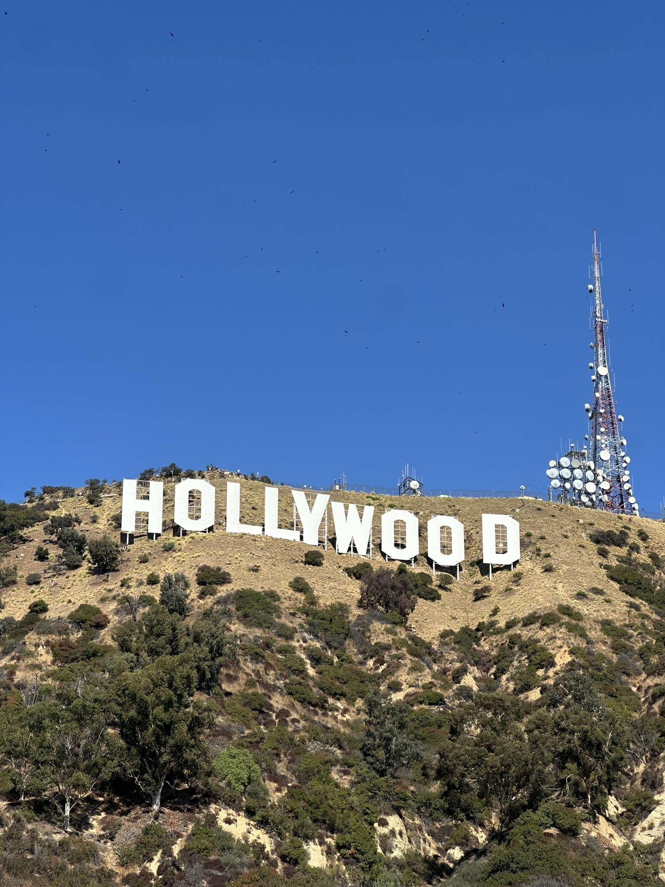
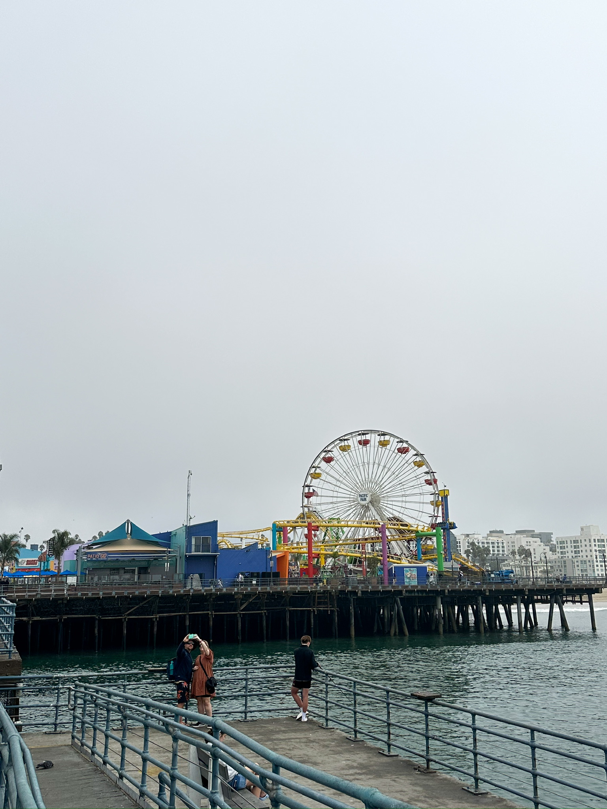
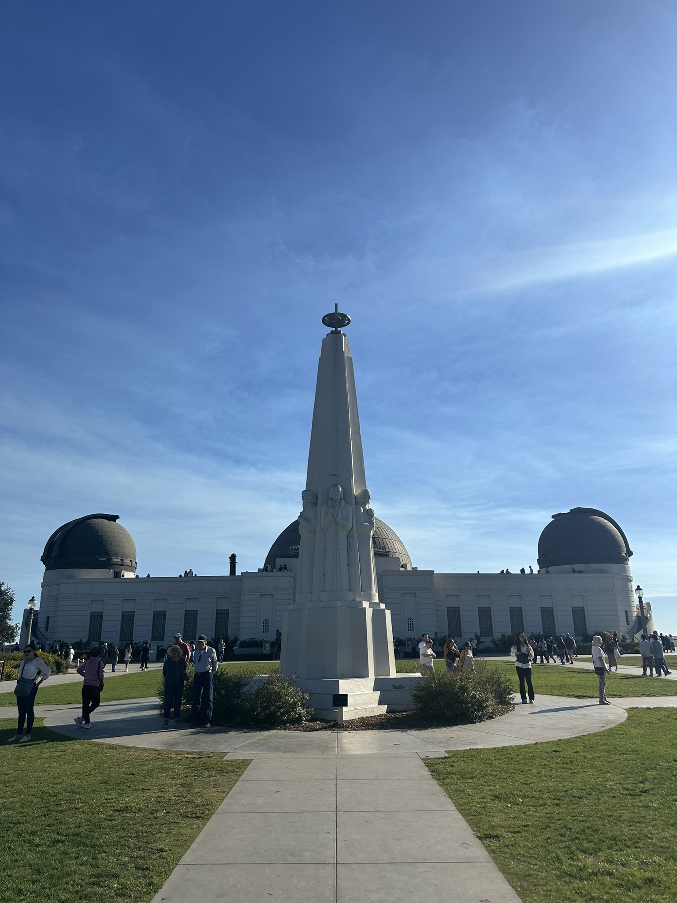
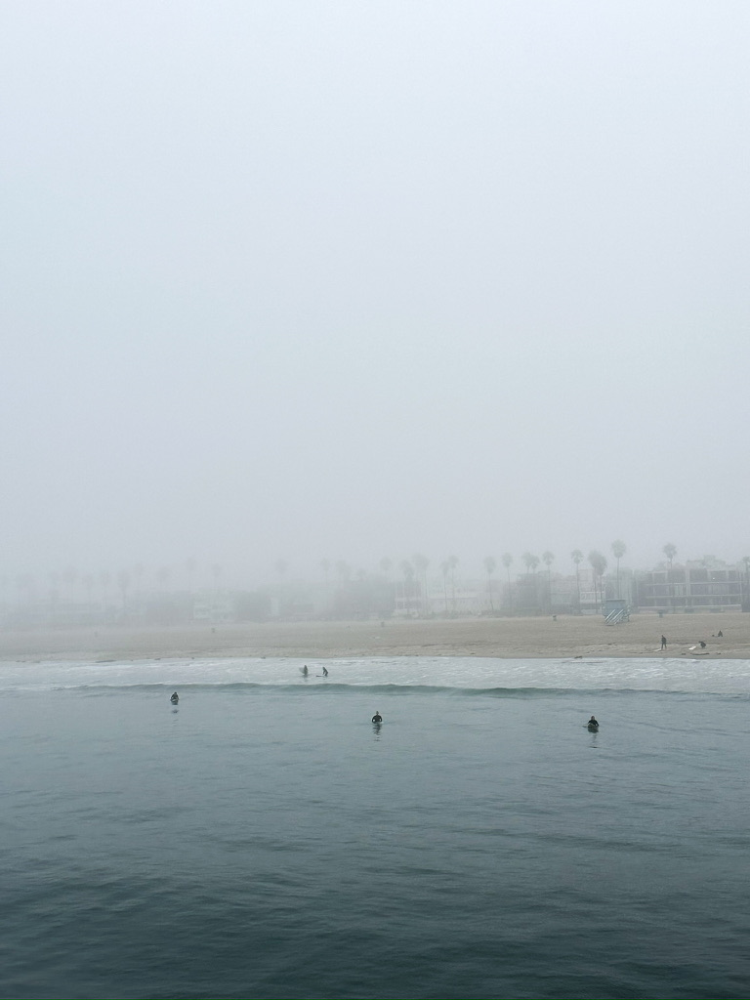
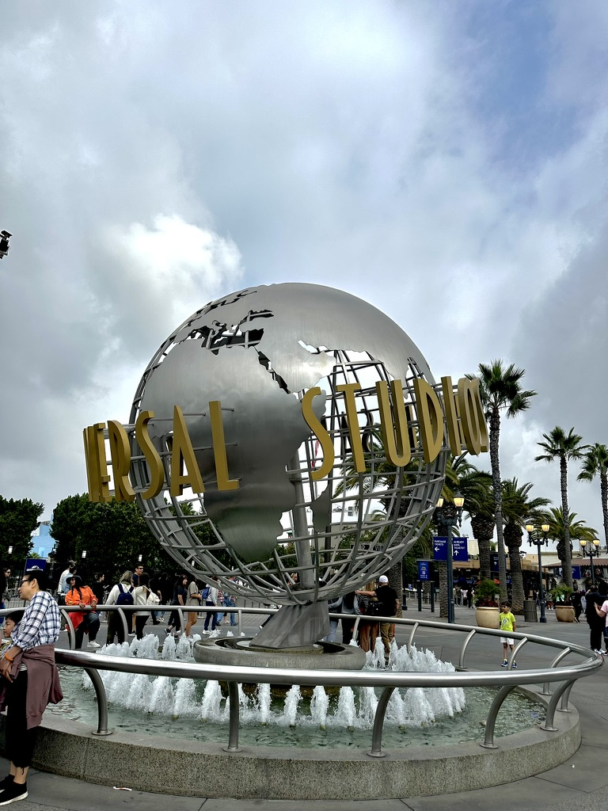

Los Angeles
Los Angeles is a sprawling city in Southern California known for its entertainment industry, beautiful beaches, and diverse culture. From Hollywood to Santa Monica, the city offers a wide range of attractions and experiences for visitors.
Top Attractions
- Hollywood: The heart of the entertainment industry, with iconic landmarks and movie studios.
- Santa Monica Pier: A historic pier offering stunning ocean views and amusement park attractions.
- Griffith Observatory: A famous astronomical observatory with panoramic views of the city.
- Venice Beach: A vibrant beach community known for its boardwalk, street performers, and eclectic shops.
- Universal Studios: A popular theme park with movie-themed attractions and shows.
- Hollywood Walk of Fame: A famous walkway featuring stars honoring celebrities from the entertainment industry.
- Warners Bros. Studios: A historic film studio where many classic movies were produced.
- Beverly Hills: A prestigious neighborhood known for its luxury homes and shopping.
Local Cuisine
Los Angeles is a melting pot of cultures, which is reflected in its diverse food scene. From authentic Mexican tacos to Korean BBQ and vegan cuisine, there is something for everyone. Don't miss trying the city's famous In-N-Out Burger or exploring the food trucks for unique and delicious eats.
Top Restaurants
- Grand Central Market: A historic market offering a variety of fresh produce, international foods, and local specialties.
- In-N-Out Burger: A popular fast-food chain known for its fresh, never frozen patties.
- Pitfire: A popular restaurant known for its creative takes on classic American dishes.
A Few Photos




